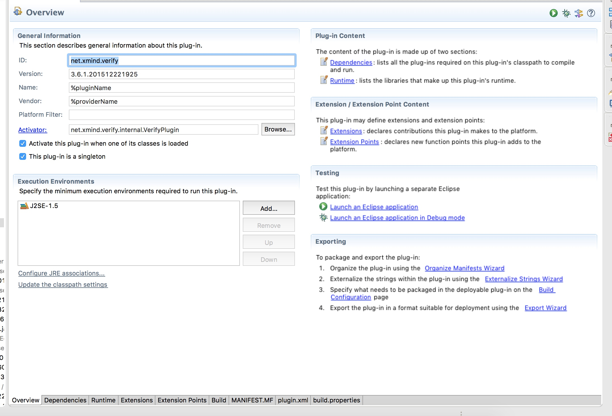
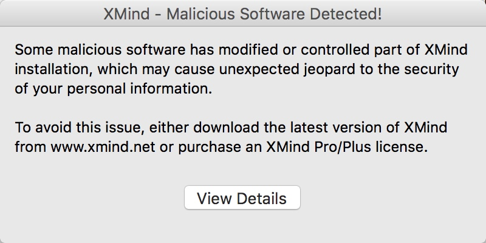

前言
这个是2016年7月份没事的时候瞎搞的，最近发现这种方法失效了，所以就放出来。
准备
需要修改的包net.xmind.verify_3.6.1.201512221925
org.xmind.meggy_3.6.1.201512221925
准备工具jd-gui eclipse IntelliIdea
步骤
1.是用jd-gui反编译以上两个包，点击file->save all sources保存源码
2.新建两个eclipse plun－in project 把源码复制到src目录下面，其余文件复制到根工程目录下面（试过 improt plus－ins and fragments的工程 貌似失败了 忘记为啥）
3.
因为eclipse 在这个界面提供了很多可视化操作 所以我就放弃了用ant写build.xml打包了4.打包!因为这两个jar包依赖了其他jar包,所以添加classpath的时候,把xmind安装目录下面的plugin文件夹里面的jar全添加进去了，打包只要点上图右下角exprot wizard这个就可以打包了
5.打包的时候 net.xmind.verify的MAINFEST.MF 文件夹会有报错 ，把报错的移除掉就可以，jd的反编译会有好多错误 我是结合了idea的反编译一起改的
工程结构
本质就是一个eclipse gui的插件工程
src文件夹：存放源码
META-INF:顾名思义 存放类元信息的地方重点在MAINFEST.MF
>Manifest-Version: 1.0
Export-Package: net.xmind.verify,net.xmind.verify.ui
(Enumerate all the packages that this plug-in exposes to clients. All other packages will be hidden from clients at all times.
就是说这个Export Package的包允许被其他插件访问 其他的隐藏)
Bundle-ActivationPolicy: lazy
Built-By: so
Bundle-Name: %pluginName
Bundle-Localization: plugin
Created-By: Apache Maven 3.3.3
Bundle-RequiredExecutionEnvironment: J2SE-1.5
Require-Bundle: org.eclipse.ui,org.eclipse.core.runtime,org.apache.com
mons.codec,org.json,net.xmind.signin;bundle-version=”[3.6.0,3.7.0)”,o
rg.xmind.ui.toolkit;bundle-version=”[3.6.0,3.7.0)”,org.xmind.core.com
mand;bundle-version=”[3.6.0,3.7.0)”
(Require-Bundle 需要依赖的插件)
Bundle-Vendor: %providerName
Build-Jdk: 1.7.0_75
Bundle-Version: 3.6.1.201512221925
Bundle-ManifestVersion: 2
Bundle-Activator: net.xmind.verify.internal.VerifyPlugin
（插件的的激活类 大概是这个意思）
Bundle-SymbolicName: net.xmind.verify;singleton:=true
Archiver-Version: Plexus Archiver
Name: net/xmind/verify/internal/LicenseVerifier$VerificationJob$7.clas
s
SHA-256-Digest: UzAsYnNacAIW3/SDkvW6pk80hEDCLxYnNJPcwoxFmLY=
（每个class文件有一个对应的sha值 ）
SIGNINF.DSA:与签名文件相关联的签名程序块文件，它存储了用于签名 JAR 文件的公共签名。
SIGNINF.SF: JAR 文件的签名文件。
SIGNINF.SF 片段：
Signature-Version: 1.0
SHA-256-Digest-Manifest-Main-Attributes: JGnBO5rPBiTyeCRQyOLcPoCKlWxWq
61cD9xYGCuOWnE=
SHA-256-Digest-Manifest: YBfAA1n5gYq3kchjzemOJnO5IyhAvKCmQl1sdig2XEY=
Created-By: 1.7.0_75 (Oracle Corporation)
Name: net/xmind/verify/ui/internal/StartupVerifier.class
SHA-256-Digest: Vk+LkwOWVeqQlvILKjYty4+YZGjBmwPF0QomtNDIHY0=
其余文件与破解无关 略过
打包与避过校验
阶段一：一开始随意修改net.xmind.verify
开始界面提示

在关于xmind->安装细节->配置信息->错误日志里面发现了以下log
!MESSAGE 下列 jar 中的清单文件或特征符文件已被篡改：/at org.xmind.ui.internal.meggy.PluginGuardian.isPluginSignatureVerified(PluginGuardian.java:205)
以上是org.xmind.meggy这个包的代码 于是顺藤摸瓜找到
|
|
故方法名思义，是校验文件签名的方法，所以直接返回改为true 跳过校验
|
|
但是又出现了一个新的问题
!MESSAGE 下列 jar 中的清单文件或特征符文件已被篡改：/Applications/XMind.app/Contents/Eclipse/plugins/net.xmind.verify_3.6.1.201512221925.jar
!STACK 0
java.security.SignatureException: 下列 jar 中的清单文件或特征符文件已被篡改：/Applications/XMind.app/Contents/Eclipse/plugins/net.xmind.verify_3.6.1.201512221925.jar
at org.eclipse.osgi.internal.signedcontent.SignatureBlockProcessor.verifyManifestAndSignatureFile(SignatureBlockProcessor.java:158)
一下是堆栈的相关代码
|
|
上面大概意思就是根据MAINFEST.MF和SIGNIN.SF去校验jar包的合法性
一开始是往错误的方向走，想要改这个包的代码，但是因为反编译出来非常多错误所以花费了不少时间在这上面，使用了idea的反编译也是不少错误，做了不少无用功，后来想着是eclipse的包名 或许有开源出来 就去maven找了下 真的找到了，而且附带了注释。本着理通整个流程的想法，顺着报错的堆栈找到了process方法
|
|
就是说当找不到RSA和DSA结尾这两个文件的时候就跳过签名验证，于是乎，我在打包的时候把sf和dsa两个文件排除在外。然后还是各种class not found，其实此时已经打包好了，也可以正常使用了，但是估计是之前的错误报错被缓存下来了，所以一直跑不通，解决方法就是删除软件和用户目录下面与xmind有关的信息，在重新安装。至此打包替换的已经避过校验了 想怎么改就怎么改
破解思路
一开始言小午是说修改isvlidate()这个函数的值为true就行了，修改后，发现点击升级pro后没有反应，pro功能也不能用，所以就转变思路的
错误思路一：发现每个包都有个messages.properties，这东西是用来做国际化的 warningDialog_title_invalidUser=XMind这种形式，有对应的语言包 根据不同语言加载不同的文件。
我把语言改成英文 然后找找到了填写序列号的那个验证按钮在messages.properties中对应的key， 想从验证按钮的点击事件监听开始 看下处理流程，但是我小看了这货的复杂程度，最后费了好大的功夫都搞不定，看了好多eclipse gui的api，最后感觉这样耗下去都可以开发eclipse gui了
错误思路二：一开始以为验证序列号是https请求验证，有这种想法是因为在启动的时候都会做一次signin的请求（写了个文件输出类，输出追一些启动过程的数据），让我以为这个原来是要做登陆操作才能校验成功。所以从https请求查起，一直顺着那个https请求找下去发现并不是，验证序列号其实是在本地的。
signin失败了也没关系，实际也是，做软件的，不允许软件脱机使用也是不合理的。
关于追踪https请求的过程，其实还没有找到判断https响应的代码，其实找到了顺着这个思路估计也是可行的，但是因为https请求的包分散在几个jar包了，所以没有去追踪
正确思路：搜关键词mail 搜到了一个方法LicenseVerifier.doVerifyLicenseKey()
发现licenseKey是长度为225个字符组成，前12个字符是licenseheader
|
|
实际用到了11位，通过各种校验猜出前这个字符串的可能值
“XAxx36A17Ixx” x代表不知道，因为压根没校验到 所以随便填17I是代表还有12个月的激活时间 实际可以填更长的，A是代表激活的是pro版本
整个doVerifyLicenseKey 读下来 我发现成功的时候执行了以下代码
|
|
此时 targetStatus 为2
所以我就把一大段的代码都注释掉了，替换成这两句话
|
|
结果可行了 没有任何校验 序列号邮箱随便填，就通过了之后就没深究原因了,估计是会存储一个破解状态在本地了,因为看加载日志 每次都会加载这些基本信息的
ps
暴力读代码不可取，前后花了10多个小时
相关资源
|
|